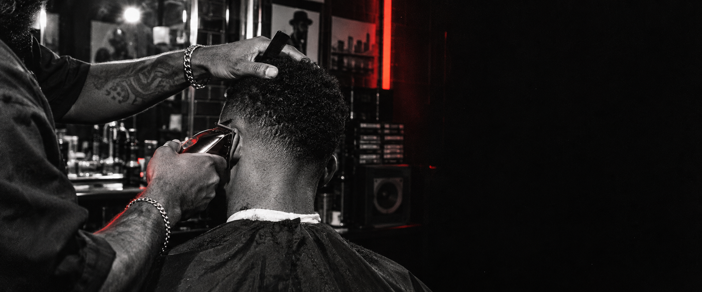

Corte personalizado
Consulta, forma y acabado para tu estilo real.

PORT ST. LUCIE · EST. 24
Cortes limpios. Energía cruda. Una experiencia de barbería influenciada por el hip-hop, el fashion y la noche.
TRACK 01 · SERVICIOS
Consulta, forma y acabado para tu estilo real.
Transiciones controladas y detalle donde importa.
Líneas y balance para completar el look.
Servicios, duración, precios y disponibilidad finales requieren confirmación de Noise Cuts.
TRACK 02 · EL CÓDIGO
Noise Cuts trabaja con todo tipo de clientes. La referencia puede venir de una tabla, una canción, una pieza de ropa o una idea que todavía no tiene nombre.
“Me gusta cortar cualquier tipo de cliente.”
TRACK 03 · LA SILLA
REQUEST TO BOOK
Envía tu día y hora preferidos. Noise Cuts revisa y confirma personalmente. No hay cobro ni reserva automática.
Abrir Noise Control ↗